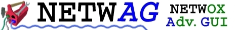

This document shows sample usages of netwag.
Several sessions/lessons will be presented. They assume user closes and reopen
netwag each time. This is not necessary, but s/he migth have clicked
somewhere and caused a state change. So, if results are not expected, close
netwag and restart a lesson.
Netwag is graphical tool, but it is described here as text only because
I cannot afford spending time to create screenshots.
Lesson 1 : navigate in the GUI
- click on Local_info notebook (the second button below File menu)
- click on Remote_info notebook
- click on Clipboard notebook
- click on Tool notebook
- click on Help sub-notebook (the second button below Run)
- click on Form sub-notebook
- click on Running sub-notebook
- click on History sub-notebook
- click on Local_info notebook
- click on Ip sub-notebook
- click on Arp_cache sub-notebook
- click on Routes sub-notebook
Lesson 2 : dynamic help
- click on Tool notebook
- click on Search sub-notebook
- move the mouse on top of the green zone
- don't move during one second
- a yellow window appears containing description of the field
- move the mouse on top of "sort" button (just below Search button)
- don't move during one second
- a yellow window appears containing description of the "sort" button
- etc.
Summary : just put the mouse on top of an item to obtain help.
Lesson 3 : clipboards
- click on Clipboard notebook (the screen is now divided in two parts :
a big white clipboard, and a blue informational
zone)
- enter "hello" in one of the 4 big white clipboards
- select "hello" text
- menu Edit - Copy (or press Control-C key)
- click in another clipboard
- menu Edit - Paste (or press Control-V key)
- between white and blue vertical scrollbars, there are 2 up arrows. Press
on them (or '+') several times : a small clipboard appears which is shared
between every notebook.
Summary : those clipboards can save data you want
Lesson 4 : local configuration
- click on Local_info notebook
- click on Devices/Ip/etc. buttons to obtain your local configuration
Summary : Local_info notebook permits to obtain information about local computer
Lesson 5 : remote configuration
- click on Remote_info notebook
- enter www.microsoft.com in the white field
- press query button (on right of white field)
- enter 1.2.3.4 (or whatever IP address) in the white field
- press query button (on right of white field)
Summary : Remote_info notebook permits to obtain information about a remote computer
Lesson 6 : need to select a tool
- [eventually exit and restart netwag because state might have changed]
- [Tool notebook should be already selected]
- click on Help sub-notebook
- [The text "No tool is selected..." appears]
- click on Form sub-notebook
- [The text "No tool is selected..." appears]
Summary : to use Help and Form sub-notebooks, a tool must be selected.
Lesson 7 : select a tool (sorted by number)
- redo all steps of lesson 6
- click on Search sub-notebook
- ["sort" radio button should be already selected (top left)]
- select tool 23 ("23 : Display ASCII table")
- click on Help sub-notebook (now, the help should be displayed)
- click on Form sub-notebook (now, the form should be displayed)
- click on Search sub-notebook
- double click on tool 22
- [the Form sub-notebook appears automatically]
Summary : to use Help and Form sub-notebooks, a tool must be selected in the search notebook.
Lesson 8 : select a tool (sorted by tree)
- [eventually exit and restart netwag because state might have changed]
- [Tool notebook should be already selected]
- [Search sub-notebook should be already selected]
- click on "tree" radio button (top left)
- [now, tools are ordered in a tree]
- click on "+ tools not related to network"
- select tool 23 ("23 : Display ASCII table")
Lesson 9 : search a tool
- [eventually exit and restart netwag because state might have changed]
- [Tool notebook should be already selected]
- [Search sub-notebook should be already selected]
- click on "sort" radio button (top left)
- click in white zone (top right, near "search")
- press key 't'
- press key 'c'
- press key 'p'
- [a list of tools related to TCP appears]
- click on "show all" radio button (top right)
- [now, all tools are visible]
Summary : if you do not see all tools, it might be because search is activated
Lesson 10 : run a tool (from Help)
- click on Tool notebook
- click on Search sub-notebook
- select tool 23 ("23 : Display ASCII table")
- click on Help sub-notebook
- press on Example button
- [the string "23" appears in the run command]
- press on Run button
- [Running notebook becomes selected and displays result between
green line. First green line indicates command. And last indicates
end of program.]
- check the "NW" checkbox below Run button
- press on Run button
- [a New Window appears and displays result]
- click on History sub-notebook
- [the command "23" appears in the list]
Lesson 11 : run a tool (from History)
- click on Tool notebook
- click on History sub-notebook
- select command "23"
- press on Copy_line button
- [the string "23" appears in the run command]
- press on Run button
Lesson 12 : run a tool (from Form)
- [select tool 23, as explained several times]
- click on Form sub-notebook
- press on Generate button
- [the command line is "23"]
- check "extended" line (press on right checkbox to automatically select
both)
- press on Generate button
- [the command line is now "23 --extended"]
- press on Run button (NW not checked, to see green
command "23 --extended")
Lesson 13 : all about History sub-notebook
- click on Tool notebook
- click on History sub-notebook
- in the white zone in front of Run and NW, write "2"
- press Add_current button
- [current command is added in the history]
- in the white zone in front of Run and NW, write "22 hello"
- press Add_current button
- [current command is added in the history]
- select command 2
- press Copy_line button
- [command is copied in the command zone]
- select command "22 hello"
- press Run_it button
- [command is copied and automatically run]
- select command 2
- press Delete_line button
- [command 2 is removed from history]
Lesson 14 : all about Help sub-notebook
Well, it's almost the same as lesson 12. It should not be too
difficult. The main idea to remember is the help is about the
last tool selected in Search notebook.
Lesson 15 : all about Form sub-notebook
As for lesson 14, the form is about the
last tool selected in Search notebook.
- click on Search sub-notebook
- double-click tool 7
- [a form appears, corresponding to parameters of tool 7]
Now, a quick explanation about this form.
First parameter (device) is a listbox. You can select the
device you want (Lo0, Eth0, etc.). The checkbox on left indicates
if parameter --device has to be generated.
Second parameter (filter) is a string. You can enter the text
you want (host 1.2.3.4). The checkbox on left indicates
if parameter --filter has to be generated.
Third parameter (pause) is a boolean. You can check or not
the checkbox. The checkbox on left indicates
if parameter --pause has to be generated.
Let's restart :
- click on Search sub-notebook
- double-click tool 7
- [a form appears, corresponding to parameters of tool 7]
- select parameter device "Eth0" (or whatever device name)
- [the checkbox on left is automatically checked]
- click on Generate button
- [the command "7 --device "Eth0"" appears]
- enter parameter filter "host 1.2.3.4"
- click on Generate button
- [the command "7 --device "Eth0" --filter "host 1.2.3.4"" appears]
- check the checkbox for pause
- click on Generate button
- [the command "7 --filter "host 1.2.3.4" --pause" appears]
Now a quick usage of other buttons :
- Run : run the command
- Run_it : generate and run the command
- Reset : reset the form
- Update : display form associated to tool number in command
Lesson 16 : interacting with a tool (open a New Window)
We suppose 1.2.3.4 has a listening FTP server.
- click on Tool notebook
- enter command "87 1.2.3.4 21"
- check NW checkbox
- press Run button
- [a New Window appears. It should contain the banner of FTP server]
- enter "QUIT" (press 'Q' 'U' 'I' 'T' keys, and press Return key)
- [the FTP server says goodbye]
- press a key to close the New Window
Lesson 17 : interacting with a tool (in netwag)
When you want to interact with a tool, it's easier to follow lesson 16.
It can also be done in netwag, but it's more complicated.
- click on Tool notebook
- enter command "87 1.2.3.4 21"
- do not check NW checkbox
- press Run button
- [netwag switches to Running notebook. It should contain the banner of FTP server]
- enter "QUIT\n" (\n is for line skip) in the top white zone near Send button
- press Send button (or press Return key)
- [the data you entered (QUIT) is written in blue]
- [the FTP server says goodbye]
- [a green __END_OF_PROGRAM__ indicates tool has terminated]
The checkbox after Send indicates if data has to be echoed
in blue (uncheck to enter a password for example).
This sending zone (text + Send button + echo checkbox) is only
present for tools which can receive data from stdin (keyboard). For
other tools, it is not needed, so it is hidden.
When a tool is running, a zone is present above. Button Copy_command permits to
copy command which launched tool. Button Interrupt permits to
interrupt a running tool. Button Pause permits to pause display. Checkbox
autoscroll automatically scrolls down the window. This zone hides
itself when tool has finished running.
When a tool has finished running, two buttons appears. Button Copy_command
permits to copy command which launched tool. Button Run_it_again permits
to run the same tool once more.
Lesson 18 : when several tools have been run
When two or more tools have been run, a notebook appears and permits
to switch between different tools (running or terminated).
- close and reopen netwag
- click on Tool notebook
- click on Running notebook
- enter command "13"
- press Run button
- [its output is displayed]
- enter command "7"
- press Run button
- [its output is displayed]
- click alternatively on buttons 13 and 7 to switch between those
two tools : "13" is white which means its terminated, while "7"
is black so still running (if sniff is supported on your computer)
- enter command "1"
- press Run button
- [its output is displayed]
- click on 13
- click on a black cross (X) to close current output (tool 13)
- [only 7 and 1 are available now]
Lesson 19 : font
- open menu Options
- choose "Font..."
- select a new font
Lesson 20 : colors
Background colors have following meaning:
- white is for editable text
- blue is for selectable only text
- green is for listboxes
Lesson 21 : sessions
When netwag is closed, it saves a session file : window's size,
clipboard, font, etc.
- open netwag
- enlarge window's size
- close netwag
- reopen netwag
- [netwag has now the new size]
Lesson 22 : dynamic help
In lesson 2, dynamic help was presented. It can be deactivated. Well, I
suggest you to leave it for the first days.
- open menu Help
- select line Dynamic_help
- [it becomes checked or unchecked]
Conclusion
Have fun :)